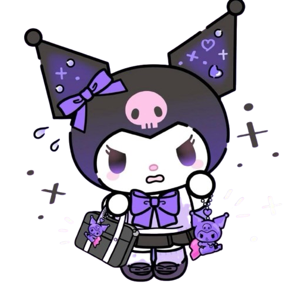

🌙 Ciri Khas Fashion & Gaya Kuromi
1. Warna Dominan: Hitam, Ungu, dan Pink
- Kuromi sering memakai hoodie hitam dengan tengkorak putih di tengah.
- Aksen ungu dan pink sering ditambahkan untuk memberi kesan girly namun tetap rebel.
2. Gaya Punk-Gothic Lolita
- Kuromi sering digambarkan dengan gaya punk, gothic, atau rocker.
- Elemen seperti rantai, paku, lace, dan korset mini kadang muncul di merchandise atau art fan Kuromi.
- Tetap manis — ala gothic lolita Jepang.
3. Aksesori Imut-Edgy
- Kuromi suka mengenakan topi telinga tengkorak, sepatu boot tinggi, dan pita.
- Kalung choker, gelang spike, atau bros tengkorak kecil juga favoritnya!
4. Ekspresi & Sikap
- Kuromi dikenal nakal, sedikit tomboy, tapi lovable banget.
- Sering tampil dengan ekspresi jahil atau cool — ini juga bagian dari gayanya!
